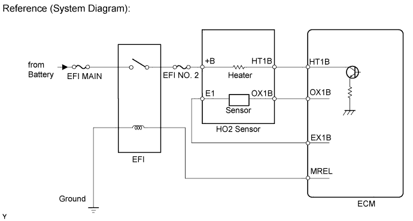
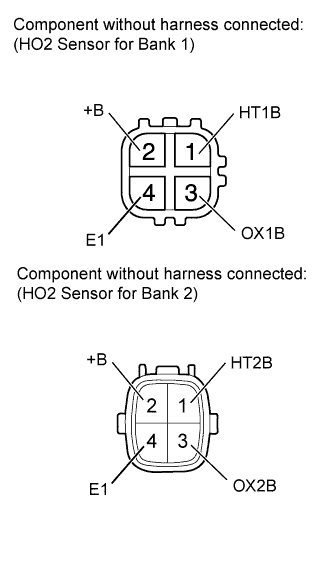
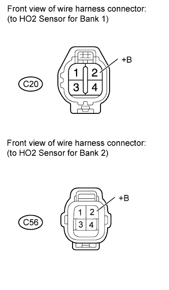
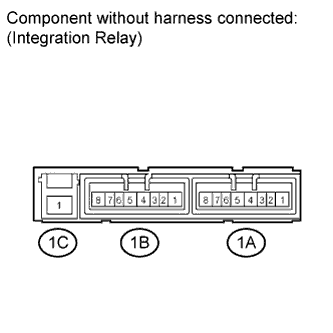
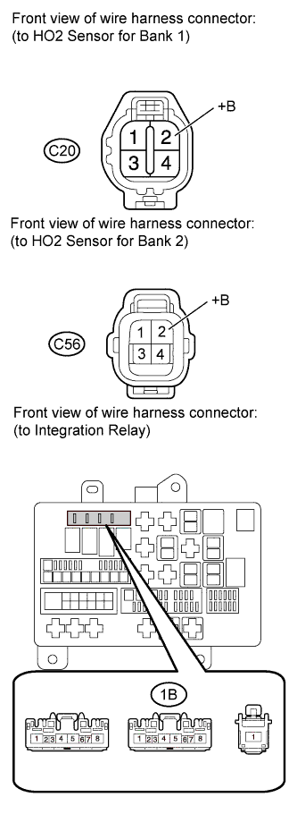
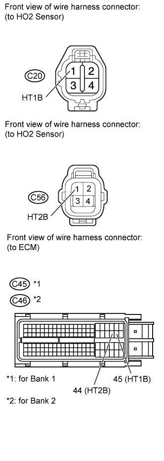

DTC P0037 Oxygen Sensor Heater Control Circuit Low (Bank 1 Sensor 2) |
DTC P0038 Oxygen Sensor Heater Control Circuit High (Bank 1 Sensor 2) |
DTC P0057 Oxygen Sensor Heater Control Circuit Low (Bank 2 Sensor 2) |
DTC P0058 Oxygen Sensor Heater Control Circuit High (Bank 2 Sensor 2) |

| DTC Code | DTC Detection Condition | Trouble Area |
| P0037 P0057 | The Heated Oxygen (HO2) sensor heater current is below 0.3 A (1 trip detection logic). |
|
| P0038 P0058 | The Heated Oxygen (HO2) sensor heater current is higher than 2 A (1 trip detection logic). |
|
| 1.INSPECT HEATED OXYGEN SENSOR (HEATER RESISTANCE) |
 |
Disconnect the Heated Oxygen (HO2) sensor connector.
Measure the resistance according to the value(s) in the table below.
| Tester Connection | Condition | Specified Condition |
| 1 (HT1B) - 2 (+B) | 20°C (68°F) | 11 to 16 Ω |
| 1 (HT1B) - 4 (E1) | Always | 10 kΩ or higher |
| 1 (HT2B) - 2 (+B) | 20°C (68°F) | 11 to 16 Ω |
| 1 (HT2B) - 4 (E1) | Always | 10 kΩ or higher |
|
| ||||
| OK | |
| 2.CHECK TERMINAL VOLTAGE (+B OF HO2 SENSOR) |
 |
Disconnect the HO2 sensor connector.
Measure the voltage according to the value(s) in the table below.
| Tester Connection | Switch Condition | Specified Condition |
| C20-2 (+B) - Body ground | Engine switch on (IG) | 11 to 14 V |
| C56-2 (+B) - Body ground | Engine switch on (IG) | 11 to 14 V |
| Result | Proceed to |
| NG | A |
| OK | B |
|
| ||||
| A | |
| 3.INSPECT INTEGRATION RELAY (EFI MAIN) |
 |
Remove the integration relay from the engine room relay block.
Inspect the EFI MAIN fuse.
Remove the EFI MAIN fuse from the integration relay.
Measure the resistance according to the value(s) in the table below.
| Tester Connection | Condition | Specified Condition |
| EFI MAIN fuse | Always | Below 1 Ω |
Reinstall the EFI MAIN fuse.
Inspect the EFI relay.
Measure the resistance according to the value(s) in the table below.
| Tester Connection | Condition | Specified Condition |
| 1C-1 - 1B-4 | When no battery voltage applied to terminals 1B-2 and 1B-3 | 10 kΩ or higher |
| When battery voltage applied to terminals 1B-2 and 1B-3 | Below 1 Ω |
|
| ||||
| OK | |
| 4.CHECK HARNESS AND CONNECTOR (HO2 SENSOR - INTEGRATION RELAY) |
 |
Check the EFI NO. 2 fuse.
Remove the EFI NO. 2 fuse from the engine room relay block.
Measure the resistance according to the value(s) in the table below.
| Tester Connection | Condition | Specified Condition |
| EFI NO. 2 fuse | Always | Below 1 Ω |
Reinstall the EFI NO. 2 fuse.
Disconnect the HO2 sensor connector.
Remove the integration relay from the engine room relay block.
Measure the resistance according to the value(s) in the table below.
| Tester Connection | Condition | Specified Condition |
| C20-2 (+B) - 1B-4 | Always | Below 1 Ω |
| C56-2 (+B) - 1B-4 | Always | Below 1 Ω |
| C20-2 (+B) or 1B-4 - Body ground | Always | 10 kΩ or higher |
| C56-2 (+B) or 1B-4 - Body ground | Always | 10 kΩ or higher |
|
| ||||
| OK | ||
| ||
| 5.CHECK HARNESS AND CONNECTOR (HO2 SENSOR - ECM) |
 |
Disconnect the HO2 sensor connector.
Disconnect the ECM connector.
Measure the resistance according to the value(s) in the table below.
| Tester Connection | Condition | Specified Condition |
| C20-1 (HT1B) - C45-45 (HT1B) | Always | Below 1 Ω |
| C56-1 (HT2B) - C45-44 (HT2B) | Always | Below 1 Ω |
| C20-1 (HT1B) or C45-45 (HT1B) - Body ground | Always | 10 kΩ or higher |
| C56-1 (HT2B) or C45-44 (HT2B) - Body ground | Always | 10 kΩ or higher |
| Tester Connection | Condition | Specified Condition |
| C20-1 (HT1B) - C46-45 (HT1B) | Always | Below 1 Ω |
| C56-1 (HT2B) - C46-44 (HT2B) | Always | Below 1 Ω |
| C20-1 (HT1B) or C46-45 (HT1B) - Body ground | Always | 10 kΩ or higher |
| C56-1 (HT2B) or C46-44 (HT2B) - Body ground | Always | 10 kΩ or higher |
|
| ||||
| OK | |
| 6.CHECK WHETHER DTC OUTPUT RECURS |
Connect the intelligent tester to the DLC3.
Turn the engine switch on (IG).
Turn the tester on.
Clear DTCs (Click here).
Start the engine.
Allow the engine to idle for 2 minutes or more.
Enter the following menus: Powertrain / Engine and ECT / DTC.
Read DTCs.
| Result | Proceed to |
| No DTC is output | A |
| P0037, P0038, P0057 and/or P0058 is output | B |
|
| ||||
| A | ||
| ||